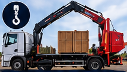

VGP › Grue auxiliaire de chargement
VGP grue auxiliaire de chargement
Grues auxiliaires montées sur camion, à flèche articulée ou télescopique. Nous les vérifions sur votre site, partout à La Réunion.
Tarif90 € HT par engin
PériodicitéTous les 6 mois
Ce que nous contrôlons
- Colonne, flèches, rallonges et soudures
- Fixation de la grue sur le châssis
- Stabilisateurs et leurs verrouillages
- Limiteur de moment de charge
- Crochet et linguet de sécurité
- Distributeurs, commandes et arrêt d’urgence
- Essais de tous les mouvements et en charge

Ce que vous recevez
- Un rapport numéroté en PDF, avec photos
- L’avis du contrôleur : apte ou non conforme
- Les réserves à lever, expliquées
- La date de la prochaine vérification